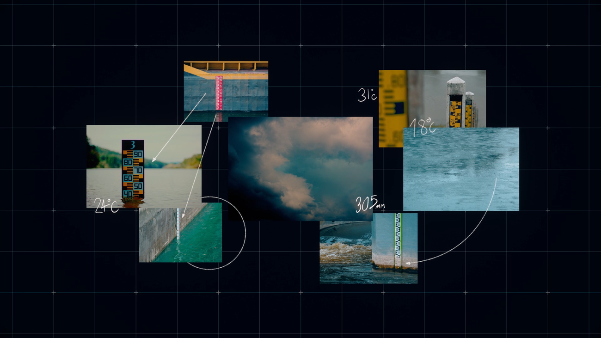

Études de Cas et Applications Concrètes
Google Flood Hub - Inde et Bangladesh
Système de prédiction des inondations basé sur l'IA pour des alertes précoces.
Résultat: Protection de plus de 200 millions de personnes avec des prévisions jusqu'à 7 jours à l'avance.
Purecontrol - France
Optimisation des stations d'épuration par IA.
Résultat: Réduction de 15% de la consommation énergétique et amélioration de 25% de la qualité des rejets.
WADI - Espagne et Portugal
Système de détection des fuites dans les réseaux d'eau utilisant l'IA.
Résultat: Réduction de 30% des pertes d'eau dans les zones pilotes.
